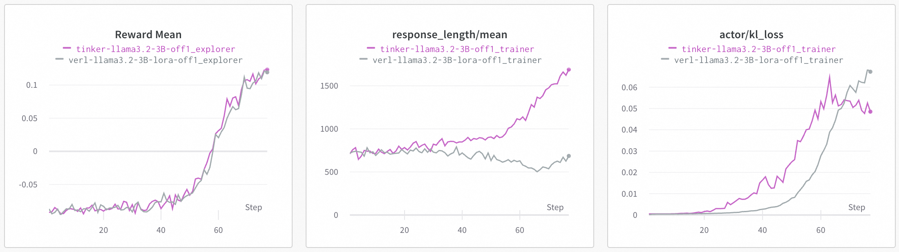

Tinker 后端#
备注
本示例演示了如何在 Trinity-RFT 中使用 Tinker，从而在无 GPU的设备上进行模型训练。
安装与配置#
1. API Key 配置#
在启动 Ray 之前，必须将 TRINITY_API_KEY 环境变量设置为你的 Tinker API 密钥，以便正确访问 Tinker 的 API：
export TRINITY_API_KEY=your_tinker_api_key
ray start --head
2. 配置文件#
在 YAML 配置文件中通过如下方式设置 model.tinker 参数以启用 Tinker 后端：
model:
tinker:
enable: true
rank: 32
seed: null
train_mlp: true
train_attn: true
train_unembed: true
配置参数说明#
tinker：Tinker 专用配置部分。注意：启用 Tinker 后，所有 LoRA 配置（model.lora_configs）将被忽略。enable：是否启用 Tinker 后端。默认值：falserank：LoRA 的秩，控制适应矩阵的大小。默认值：32seed：Tinker 操作的随机种子。未指定（null）时不设定特定种子train_mlp：是否训练 MLP（前馈）层。默认值：truetrain_attn：是否训练注意力层。默认值：truetrain_unembed：是否训练输出（unembedding）层。默认值：true
使用方法#
配置完成后，Trinity-RFT 使用 Tinker 后端的方式与标准 veRL 后端一致。启动训练命令如下：
trinity run --config tinker.yaml # 请替换为你的实际配置文件路径
Tinker 后端的功能限制#
熵损失（entropy loss） 与 veRL 后端不完全一致。
不支持
compute_advantage_in_trainer=true的算法，包括：PPO（
algorithm.algorithm_type=ppo）Reinforce++（
algorithm.algorithm_type=reinforceplusplus）RLOO（
algorithm.algorithm_type=rloo）On-policy distillation（
algorithm.algorithm_type=on_policy_distill）
目前支持
grpo,opmd,sft等算法，未来会支持更多算法。暂不支持多阶段训练，后续会添加该功能。
💡 完整的示例配置文件见
tinker.yaml。
Llama-3.2-3B 模型实验结果#
我们在 GSM8K 数据集上，分别使用 Tinker 和 veRL 后端对 Llama-3.2-3B 模型进行了训练。以下为实验中使用的完整配置文件。
点击展开：Tinker 后端配置
mode: both
project: Trinity-RFT-gsm8k
group: alignment-tinker
name: tinker-llama3.2-3B-off1
checkpoint_root_dir: ${oc.env:TRINITY_CHECKPOINT_ROOT_DIR,./checkpoints}
algorithm:
algorithm_type: grpo
repeat_times: 8
kl_loss_fn_args:
kl_coef: 0.0
optimizer:
lr: 1.0e-05
model:
model_path: meta-llama/Llama-3.2-3B
max_prompt_tokens: 1024
max_response_tokens: 2048
custom_chat_template: "{{- bos_token }}\n{%- if custom_tools is defined %}\n {%- set tools = custom_tools %}\n{%- endif %}\n{%- if not tools_in_user_message is defined %}\n {%- set tools_in_user_message = true %}\n{%- endif %}\n{%- if not date_string is defined %}\n {%- if strftime_now is defined %}\n {%- set date_string = strftime_now(\"%d %b %Y\") %}\n {%- else %}\n {%- set date_string = \"26 Jul 2024\" %}\n {%- endif %}\n{%- endif %}\n{%- if not tools is defined %}\n {%- set tools = none %}\n{%- endif %}\n\n{#- This block extracts the system message, so we can slot it into the right place. #}\n{%- if messages[0]['role'] == 'system' %}\n {%- set system_message = messages[0]['content']|trim %}\n {%- set messages = messages[1:] %}\n{%- else %}\n {%- set system_message = \"\" %}\n{%- endif %}\n\n{#- System message #}\n{{- \"<|start_header_id|>system<|end_header_id|>\\n\\n\" }}\n{%- if tools is not none %}\n {{- \"Environment: ipython\\n\" }}\n{%- endif %}\n{{- \"Cutting Knowledge Date: December 2023\\n\" }}\n{{- \"Today Date: \" + date_string + \"\\n\\n\" }}\n{%- if tools is not none and not tools_in_user_message %}\n {{- \"You have access to the following functions. To call a function, please respond with JSON for a function call.\" }}\n {{- 'Respond in the format {\"name\": function name, \"parameters\": dictionary of argument name and its value}.' }}\n {{- \"Do not use variables.\\n\\n\" }}\n {%- for t in tools %}\n {{- t | tojson(indent=4) }}\n {{- \"\\n\\n\" }}\n {%- endfor %}\n{%- endif %}\n{{- system_message }}\n{{- \"<|eot_id|>\" }}\n\n{#- Custom tools are passed in a user message with some extra guidance #}\n{%- if tools_in_user_message and not tools is none %}\n {#- Extract the first user message so we can plug it in here #}\n {%- if messages | length != 0 %}\n {%- set first_user_message = messages[0]['content']|trim %}\n {%- set messages = messages[1:] %}\n {%- else %}\n {{- raise_exception(\"Cannot put tools in the first user message when there's no first user message!\") }}\n{%- endif %}\n {{- '<|start_header_id|>user<|end_header_id|>\\n\\n' -}}\n {{- \"Given the following functions, please respond with a JSON for a function call \" }}\n {{- \"with its proper arguments that best answers the given prompt.\\n\\n\" }}\n {{- 'Respond in the format {\"name\": function name, \"parameters\": dictionary of argument name and its value}.' }}\n {{- \"Do not use variables.\\n\\n\" }}\n {%- for t in tools %}\n {{- t | tojson(indent=4) }}\n {{- \"\\n\\n\" }}\n {%- endfor %}\n {{- first_user_message + \"<|eot_id|>\"}}\n{%- endif %}\n\n{%- for message in messages %}\n {%- if not (message.role == 'ipython' or message.role == 'tool' or 'tool_calls' in message) %}\n {{- '<|start_header_id|>' + message['role'] + '<|end_header_id|>\\n\\n'+ message['content'] | trim + '<|eot_id|>' }}\n {%- elif 'tool_calls' in message %}\n {%- if not message.tool_calls|length == 1 %}\n {{- raise_exception(\"This model only supports single tool-calls at once!\") }}\n {%- endif %}\n {%- set tool_call = message.tool_calls[0].function %}\n {{- '<|start_header_id|>assistant<|end_header_id|>\\n\\n' -}}\n {{- '{\"name\": \"' + tool_call.name + '\", ' }}\n {{- '\"parameters\": ' }}\n {{- tool_call.arguments | tojson }}\n {{- \"}\" }}\n {{- \"<|eot_id|>\" }}\n {%- elif message.role == \"tool\" or message.role == \"ipython\" %}\n {{- \"<|start_header_id|>ipython<|end_header_id|>\\n\\n\" }}\n {%- if message.content is mapping or message.content is iterable %}\n {{- message.content | tojson }}\n {%- else %}\n {{- message.content }}\n {%- endif %}\n {{- \"<|eot_id|>\" }}\n {%- endif %}\n{%- endfor %}\n{%- if add_generation_prompt %}\n {{- '<|start_header_id|>assistant<|end_header_id|>\\n\\n' }}\n{%- endif %}\n"
tinker:
enable: true
cluster:
node_num: 1
gpu_per_node: 8
buffer:
batch_size: 96
total_epochs: 1
explorer_input:
taskset:
name: taskset
storage_type: file
path: openai/gsm8k
split: train
subset_name: main
format:
prompt_key: question
response_key: answer
default_workflow_type: math_workflow
trainer_input:
experience_buffer:
name: experience_buffer
storage_type: queue
explorer:
runner_per_model: 16
rollout_model:
engine_num: 4
seed: 42
trainer:
save_interval: 100
grad_clip: 1.0
monitor:
monitor_type: wandb
synchronizer:
sync_method: checkpoint
sync_style: fixed
sync_interval: 1
sync_offset: 1
sync_timeout: 1200
点击展开：veRL 后端配置（LoRA）
mode: both
project: Trinity-RFT-gsm8k
group: alignment-tinker
name: verl-llama3.2-3B-lora-off1
checkpoint_root_dir: ${oc.env:TRINITY_CHECKPOINT_ROOT_DIR,./checkpoints}
algorithm:
algorithm_type: grpo
repeat_times: 8
kl_loss_fn_args:
kl_coef: 0.0
optimizer:
lr: 1.0e-05
data_processor: {}
model:
model_path: meta-llama/Llama-3.2-3B
max_prompt_tokens: 1024
max_response_tokens: 2048
custom_chat_template: "{{- bos_token }}\n{%- if custom_tools is defined %}\n {%- set tools = custom_tools %}\n{%- endif %}\n{%- if not tools_in_user_message is defined %}\n {%- set tools_in_user_message = true %}\n{%- endif %}\n{%- if not date_string is defined %}\n {%- if strftime_now is defined %}\n {%- set date_string = strftime_now(\"%d %b %Y\") %}\n {%- else %}\n {%- set date_string = \"26 Jul 2024\" %}\n {%- endif %}\n{%- endif %}\n{%- if not tools is defined %}\n {%- set tools = none %}\n{%- endif %}\n\n{#- This block extracts the system message, so we can slot it into the right place. #}\n{%- if messages[0]['role'] == 'system' %}\n {%- set system_message = messages[0]['content']|trim %}\n {%- set messages = messages[1:] %}\n{%- else %}\n {%- set system_message = \"\" %}\n{%- endif %}\n\n{#- System message #}\n{{- \"<|start_header_id|>system<|end_header_id|>\\n\\n\" }}\n{%- if tools is not none %}\n {{- \"Environment: ipython\\n\" }}\n{%- endif %}\n{{- \"Cutting Knowledge Date: December 2023\\n\" }}\n{{- \"Today Date: \" + date_string + \"\\n\\n\" }}\n{%- if tools is not none and not tools_in_user_message %}\n {{- \"You have access to the following functions. To call a function, please respond with JSON for a function call.\" }}\n {{- 'Respond in the format {\"name\": function name, \"parameters\": dictionary of argument name and its value}.' }}\n {{- \"Do not use variables.\\n\\n\" }}\n {%- for t in tools %}\n {{- t | tojson(indent=4) }}\n {{- \"\\n\\n\" }}\n {%- endfor %}\n{%- endif %}\n{{- system_message }}\n{{- \"<|eot_id|>\" }}\n\n{#- Custom tools are passed in a user message with some extra guidance #}\n{%- if tools_in_user_message and not tools is none %}\n {#- Extract the first user message so we can plug it in here #}\n {%- if messages | length != 0 %}\n {%- set first_user_message = messages[0]['content']|trim %}\n {%- set messages = messages[1:] %}\n {%- else %}\n {{- raise_exception(\"Cannot put tools in the first user message when there's no first user message!\") }}\n{%- endif %}\n {{- '<|start_header_id|>user<|end_header_id|>\\n\\n' -}}\n {{- \"Given the following functions, please respond with a JSON for a function call \" }}\n {{- \"with its proper arguments that best answers the given prompt.\\n\\n\" }}\n {{- 'Respond in the format {\"name\": function name, \"parameters\": dictionary of argument name and its value}.' }}\n {{- \"Do not use variables.\\n\\n\" }}\n {%- for t in tools %}\n {{- t | tojson(indent=4) }}\n {{- \"\\n\\n\" }}\n {%- endfor %}\n {{- first_user_message + \"<|eot_id|>\"}}\n{%- endif %}\n\n{%- for message in messages %}\n {%- if not (message.role == 'ipython' or message.role == 'tool' or 'tool_calls' in message) %}\n {{- '<|start_header_id|>' + message['role'] + '<|end_header_id|>\\n\\n'+ message['content'] | trim + '<|eot_id|>' }}\n {%- elif 'tool_calls' in message %}\n {%- if not message.tool_calls|length == 1 %}\n {{- raise_exception(\"This model only supports single tool-calls at once!\") }}\n {%- endif %}\n {%- set tool_call = message.tool_calls[0].function %}\n {{- '<|start_header_id|>assistant<|end_header_id|>\\n\\n' -}}\n {{- '{\"name\": \"' + tool_call.name + '\", ' }}\n {{- '\"parameters\": ' }}\n {{- tool_call.arguments | tojson }}\n {{- \"}\" }}\n {{- \"<|eot_id|>\" }}\n {%- elif message.role == \"tool\" or message.role == \"ipython\" %}\n {{- \"<|start_header_id|>ipython<|end_header_id|>\\n\\n\" }}\n {%- if message.content is mapping or message.content is iterable %}\n {{- message.content | tojson }}\n {%- else %}\n {{- message.content }}\n {%- endif %}\n {{- \"<|eot_id|>\" }}\n {%- endif %}\n{%- endfor %}\n{%- if add_generation_prompt %}\n {{- '<|start_header_id|>assistant<|end_header_id|>\\n\\n' }}\n{%- endif %}\n"
lora_configs:
- name: lora
lora_rank: 32
lora_alpha: 32
cluster:
node_num: 1
gpu_per_node: 8
buffer:
batch_size: 96
total_epochs: 1
explorer_input:
taskset:
name: taskset
storage_type: file
path: openai/gsm8k
split: train
subset_name: main
format:
prompt_key: question
response_key: answer
default_workflow_type: math_workflow
trainer_input:
experience_buffer:
name: experience_buffer
storage_type: queue
explorer:
runner_per_model: 16
rollout_model:
engine_num: 4
tensor_parallel_size: 1
gpu_memory_utilization: 0.9
dtype: bfloat16
seed: 42
trainer:
trainer_type: verl
save_interval: 100
grad_clip: 1.0
monitor:
monitor_type: wandb
synchronizer:
sync_method: checkpoint
sync_style: fixed
sync_interval: 1
sync_offset: 1
sync_timeout: 1200
结果说明#
由于 Llama-3.2-3B 是基础（非指令微调）模型，其格式化指令跟随能力有限，且本实验仅训练了一个 epoch。因此，两种后端的最终 reward 都略高于 0.1。但训练曲线显示 reward 呈明显上升趋势，表明模型已成功学习。结果可视化如下：
